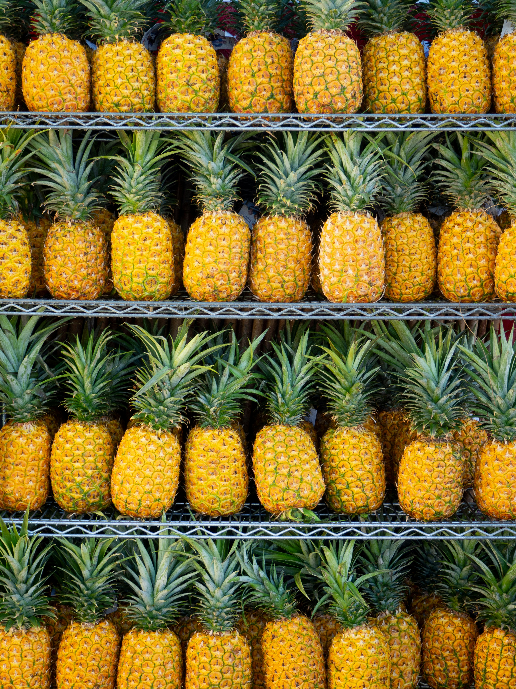
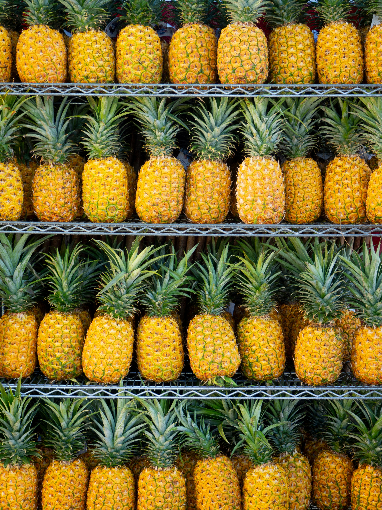
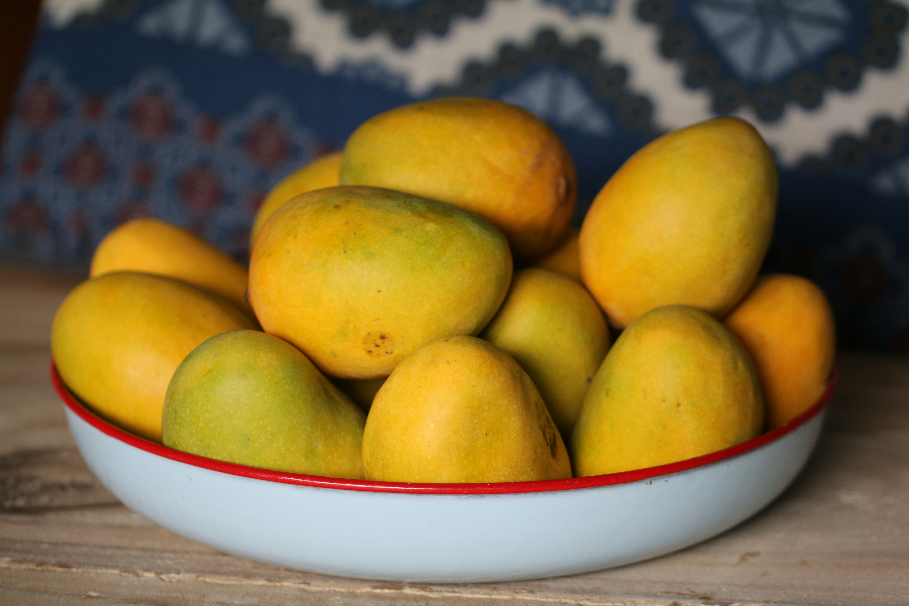
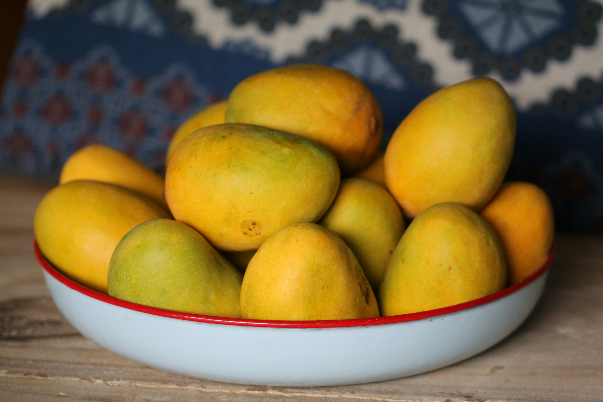

Fruits
Explore Our Organic Fruits
Discover the unparalleled taste and health benefits of our organic fruits at Frutia.com. Each piece of fruit is carefully selected to ensure it meets our high standards for quality and purity. From succulent berries bursting with flavor to crisp apples and juicy citrus fruits, our organic selection offers something for everyone. Free from synthetic pesticides and GMOs, our fruits not only taste better but also support your well-being and the environment. Dive into our diverse range and experience the true essence of nature's sweetness with every bite.
Vegetables
Discover Our Organic Vegetables
At Frutia.com, we take pride in offering a diverse array of organic vegetables that are as nutritious as they are delicious. Our selection includes vibrant spinach, hearty pumpkins, crisp lettuce, refreshing cucumbers, and nutrient-packed broccoli. Enjoy the rich flavors of juicy tomatoes, creamy avocados, and flavorful onions, garlic, and ginger. Our sweet carrots and tender green beans complete the lineup, each grown without synthetic pesticides or GMOs. Elevate your meals with our organic vegetables and savor the difference that fresh, responsibly-sourced produce can make in your diet.
Pineapples
 

Description
Pineapples are tropical fruits with a spiky, tough exterior and sweet, juicy flesh. They are often eaten fresh, in smoothies, or as part of tropical dishes. Pineapples are rich in vitamin C, manganese, and bromelain, an enzyme that aids digestion.Advantages
High in Vitamin C:
An excellent source of vitamin C, which is important for immune function and skin health.Bromelain:
Contains bromelain, an enzyme that aids digestion and may have anti-inflammatory properties.-
Antioxidants:
Rich in antioxidants, which help protect against cellular damage and reduce inflammation. Hydration:
High water content helps keep you hydrated.
Price $5 per lb
Apples


Description
Apples are crisp, sweet, or tart fruits available in various colors, including red, green, and yellow. They are enjoyed fresh, in pies, or as juice. Apples are high in fiber, particularly pectin, and provide vitamins C and A, along with antioxidants.Advantages
Rich in Fiber:
Apples are high in dietary fiber, especially pectin, which aids in digestion and helps regulate blood sugar levels.Antioxidants:
Contains antioxidants like quercetin, which can reduce inflammation and protect against certain diseases.Vitamin C:
Provides a good amount of vitamin C, which supports the immune system and skin health.Heart Health:
Fiber and antioxidants in apples can help lower cholesterol levels and support heart health.
Price $2 per lb
Strawberries

Description
Strawberries are bright red, juicy fruits with a sweet flavor. They are commonly eaten fresh, in desserts, or as part of salads. Strawberries are high in vitamin C, fiber, and antioxidants like anthocyanins and ellagic acid.Advantages
Vitamin C:
Very high in vitamin C, which is essential for immune health and skin repair.-
Antioxidants:
Rich in antioxidants like anthocyanins and ellagic acid, which have anti-inflammatory and cancer-preventing properties. -
Fiber:
High fiber content aids in digestion and helps maintain healthy blood sugar levels. -
Heart Health:
The antioxidants and fiber in strawberries contribute to heart health by reducing cholesterol levels.
Price $13 per lb
Watermelons


Description
Watermelons are large, juicy fruits with a green rind and sweet, red flesh. They are a popular summertime treat, eaten fresh or in fruit salads. Watermelons have high water content and provide vitamins A and C, along with antioxidants like lycopene.Advantages
Hydration:
Extremely high water content helps keep you hydrated.-
Vitamin C and A:
Good source of vitamins C and A, which support immune health and vision. Antioxidants:
Contains lycopene, an antioxidant that may reduce the risk of certain cancers and improve heart health.Amino Acids:
Contains citrulline, which can improve blood flow and reduce muscle soreness.
Price $14 per lb
Mangoes
 

Description
Mangoes are tropical fruits with a sweet, juicy flesh and a large pit. They can be eaten fresh, dried, or as part of smoothies and desserts. Mangoes are rich in vitamins A and C, fiber, and antioxidants like beta-carotene.Advantages
High in Vitamins:
Rich in vitamins A and C, which are important for immune function and skin health.-
Antioxidants:
Contains antioxidants like beta-carotene and zeaxanthin, which support eye health and may protect against certain cancers. -
Fiber:
Good source of dietary fiber, which aids digestion. -
Digestive Health:
Contains enzymes like amylases that help break down carbohydrates and improve digestion.
Price $2.5 per lb
Oranges

Description
Oranges are citrus fruits known for their sweet-tart flavor and juicy segments. They are often eaten fresh, juiced, or used in cooking. Oranges are high in vitamin C, fiber, and antioxidants like flavonoids.Advantages
Vitamin C:
Excellent source of vitamin C, which is vital for immune function and skin health.Fiber:
High in fiber, particularly pectin, which aids in digestion and helps regulate blood sugar levels.-
Antioxidants:
Contains flavonoids like hesperidin, which have anti-inflammatory and antioxidant properties. -
Heart Health:
Potassium and antioxidants in oranges contribute to heart health by lowering blood pressure and cholesterol levels.
Price $1.8 per lb
Blue Berry

Description
Blueberries are small, vibrant berries known for their sweet yet tangy flavor and deep blue hue. These nutrient-dense fruits offer numerous health benefits,Advantages
Antioxidants:
Extremely high in antioxidants, particularly anthocyanins, which protect against oxidative stress and inflammation.Vitamins C and K:
Good source of vitamins C and K, which support the immune system and bone health.Fiber:
High in dietary fiber, aiding in digestion and promoting satiety.Brain Health
May improve brain function and delay age-related cognitive decline due to high antioxidant content.
Price $5.6 per lb
Plums

Description
Plums are small, juicy fruits with a sweet-tart flavor and smooth skin. They can be eaten fresh, dried (as prunes), or used in jams and desserts. Plums are rich in vitamins A and C, fiber, and antioxidants like phenolic compounds.Advantages
Vitamins:
Good source of vitamins A and C, which support immune health and skin repair.Antioxidants:
Contains antioxidants like phenolic compounds, which have anti-inflammatory and cancer-preventing properties.Fiber:
High fiber content aids in digestion and helps maintain healthy blood sugar levels.Bone Health:
Contains vitamin K and potassium, which support bone health.
Price $13 per lb
Spinach
.jpg)
Description
Spinach is a leafy green vegetable known for its tender leaves and slightly bitter taste. It can be eaten raw in salads, cooked, or blended into smoothies. Spinach is highly nutritious, packed with vitamins A, C, K, and iron, making it a staple in many diets.Advantages
High in Nutrients:
Rich in vitamins A, C, and K, as well as folate, iron, and calcium.Antioxidants:
Contains antioxidants like lutein and zeaxanthin, which are beneficial for eye health.Heart Health:
High in nitrates that help regulate blood pressure and improve arterial function.Bone Health:
Vitamin K and calcium support bone health.
$4 per bunch
Pumkins

Description
Pumpkin is a type of winter squash with a thick, orange shell and sweet, dense flesh. Often associated with autumn, pumpkins are used in soups, pies, and roasted dishes. They are rich in vitamins A and C, fiber, and antioxidants.Advantages
Rich in Vitamins:
High in vitamins A and C, which support immune function and skin health.Low in Calories:
Nutrient-dense but low in calories, making it great for weight management.Fiber:
High fiber content aids digestion and promotes satiety.Antioxidants:
Contains beta-carotene, which may reduce the risk of chronic diseases.
Price($5.2 per Item)
lettuce
Description
Lettuce is a leafy green vegetable commonly used in salads and sandwiches. There are several varieties, including iceberg, romaine, and butterhead, each with a different texture and flavor. Lettuce is low in calories and provides vitamins A, C, and K.Advantages
Low in Calories:
A low-calorie vegetable that is perfect for weight management.Hydration:
High water content helps keep you hydrated.Vitamins and Minerals:
Provides vitamins A, K, and folate.Digestive Health:
Fiber content aids in digestion.
Price $3 per lb
Cucumber

Description
Cucumbers are crisp, refreshing vegetables with a mild flavor, often enjoyed raw in salads or pickled. They have a high water content, making them hydrating and low in calories. Cucumbers provide vitamins K and C and are a good source of hydration.Advantages
Hydration:
High water content helps with hydration.Low in Calories:
Very low in calories, making it a great addition to any diet.Vitamins and Minerals:
Provides vitamin K and potassium.Antioxidants:
Contains antioxidants that can reduce inflammation.
Price $2.2 per lb
Brocolli

Description
Broccoli is a cruciferous vegetable with a tree-like structure, consisting of a thick stalk and a green flowering head. It can be eaten raw, steamed, roasted, or stir-fried. Broccoli is rich in vitamins C and K, fiber, and antioxidants like sulforaphane.Advantages
Vitamins and Minerals:
High in vitamins C, K, and folate.Fiber:
High fiber content supports digestive health.Antioxidants:
Contains sulforaphane, which may have cancer-preventing properties.Bone Health:
Calcium and vitamin K support bone health.
Price $4 per bunch
Tomatoes

Description
Tomatoes are juicy, red fruits commonly used as vegetables in culinary contexts. They come in various shapes and sizes, from small cherry tomatoes to large beefsteak varieties. Tomatoes are high in vitamins C and A, lycopene, and other antioxidants.Advantages
Vitamins and Minerals:
High in vitamin C, potassium, folate, and vitamin K.Antioxidants:
Rich in lycopene, which may reduce the risk of heart disease and cancer.Heart Health:
Potassium and lycopene are beneficial for heart health.Hydration:
High water content helps with hydration..
Price $8.75 per lb
Onions
Description
Onions are bulbous vegetables with a pungent flavor that mellows and sweetens when cooked. They come in various types, including red, white, and yellow onions. Onions are rich in antioxidants, particularly quercetin, and have anti-inflammatory properties.Advantages
Antioxidants:
High in antioxidants, particularly quercetin, which has anti-inflammatory properties.Heart Health:
May help reduce cholesterol levels and lower blood pressure.Digestive Health:
Contains prebiotics that support gut health.Immune Support:
Antibacterial properties can boost the immune system.
Price $1.8 per lb
Garlic

Description
Garlic is a pungent bulb vegetable used as a flavoring agent in many cuisines. It has a strong, spicy flavor that mellows and sweetens upon cooking. Garlic is known for its immune-boosting properties and contains compounds like allicin that have antibacterial and anti-inflammatory effects.Advantages
Immune Support:
Has antibacterial and antiviral properties.Heart Health:
Can help lower blood pressure and cholesterol levels.Anti-inflammatory:
Contains compounds like allicin that have anti-inflammatory effects.Antioxidants:
Rich in antioxidants, which can protect against cell damage and aging.
Price $3.5 per lb
Ginger
Description
Ginger is a knobby root with a spicy, aromatic flavor, commonly used in cooking and teas. It is well-known for its anti-inflammatory properties and ability to aid digestion and relieve nausea. Ginger contains the bioactive compound gingerol, which has powerful medicinal properties.Advantages
- Contains gingerol, which has powerful anti-inflammatory and antioxidant effects.
Digestive Health:
Can help relieve nausea and improve digestion.Pain Relief:
May reduce muscle pain and soreness.Immune Support:
Has antibacterial and antiviral properties that support the immune system.
Price $1.4 per lb
Carrot

Description
Carrots are crunchy, orange root vegetables with a sweet flavor. They can be eaten raw, cooked, or juiced. Carrots are high in beta-carotene, which is converted into vitamin A in the body, supporting eye health and immune function.Advantages
Vitammin A:
Extremely high in beta-carotene, which is converted into vitamin A, supporting eye health.Antioxidants:
Contains antioxidants that may reduce the risk of chronic diseases.Digestive Health:
High fiber content aids digestion.Heart Health:
May help lower cholesterol levels.
Price $1.2 per lb
Green Beans

Description
Green beans are slender, green vegetables that can be eaten raw or cooked. They are a good source of vitamins A, C, and K, fiber, and folate. Green beans are commonly used in salads, stir-fries, and as a side dish.Advantages
Vitamins and Minerals:
Good source of vitamins A, C, and K, as well as folate.Fiber:
High fiber content supports digestive health.Antioxidants:
Contains flavonoids and other antioxidants that can reduce inflammation.Low in Calories:
Low-calorie content makes it great for weight management
Price $2 per lb
Frutia.com
Buy Organic. Eat Organic. Live Organic
At Frutia.com, we believe in the transformative power of organic fruits and vegetables. Our mission is to bring you the freshest and most delicious produce that nature has to offer. Whether you're looking to buy organic, eat organic, or live organic, we've got you covered with a vibrant selection of fruits and vegetables grown without harmful chemicals or pesticides. Dive into a world of flavor and health, and let Frutia.com be your trusted source for all things organic. Embrace a nutritious and sustainable lifestyle with the best that nature provides.
Clover Honey
Clover Honey
Clover honey is a popular variety of honey known for its mild flavor and numerous health benefits. Here are some of its nutritious benefits:
Rich in Antioxidants:
Clover honey contains antioxidants like flavonoids, which help reduce oxidative stress in the body, protecting cells from damage and reducing the risk of chronic diseases.
Anti-Inflammatory Properties:
It has natural anti-inflammatory properties that can help reduce inflammation in the body, which is beneficial for conditions like arthritis and other inflammatory diseases.
Antibacterial and Antiviral Properties:
Clover honey has antibacterial and antiviral properties that can help fight infections and support the immune system.
Source of Energy:
It is a natural source of carbohydrates, providing a quick and easy energy boost. This makes it an excellent natural sweetener for athletes and active individuals.
Digestive Health:
Clover honey can act as a prebiotic, promoting the growth of beneficial bacteria in the gut, which is essential for healthy digestion.
Wound Healing:
The antibacterial properties of clover honey make it effective in promoting wound healing and preventing infection when applied topically to minor cuts and burns.
Allergy Relief:
Local clover honey is sometimes used to help with seasonal allergies. Consuming small amounts of local honey can potentially help the body build up a tolerance to local pollen.
One jar(30 Ounces) is $18
Single Comb is $15

Dandelion Honey
Dandelion Honey
Dandelion honey is a type of honey made primarily from the nectar of dandelion flowers (Taraxacum officinale). It is typically bright yellow in color, with a strong, distinctive flavor that can range from sweet to slightly tangy. While not as common as other types of honey, dandelion honey is appreciated for its unique taste and potential health benefits.
Nutritional Benefits of Dandelion Honey:
Rich in Antioxidants: Dandelion honey contains various antioxidants, including flavonoids and phenolic acids, which help protect the body from oxidative stress and reduce the risk of chronic diseases.
Anti-Inflammatory Properties: The anti-inflammatory compounds in dandelion honey can help reduce inflammation, supporting overall health and potentially alleviating symptoms of inflammatory conditions.
Vitamins and Minerals: This honey is a good source of vitamins and minerals, such as vitamin C, potassium, calcium, and iron, contributing to overall nutritional intake.
Digestive Health: Like other types of honey, dandelion honey has prebiotic properties that support gut health by promoting the growth of beneficial bacteria.
Liver Support: Dandelion is known for its liver-detoxifying properties, and dandelion honey may offer similar benefits, helping to support liver function and detoxification processes.
Immune System Boost: The antimicrobial and antibacterial properties of dandelion honey can help boost the immune system, making it effective in fighting off infections and promoting overall health.
Energy Source: Being a natural source of carbohydrates, dandelion honey provides a quick and effective energy boost, making it a good option for athletes and those needing an energy lift.